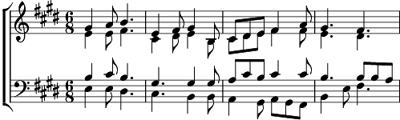

1. Quel que soit le voleur,
Qui a pris dans ma besace de cuir bleu,
Un souci, minutieux et sans complice,
Car soudain sous les eaux,
Un rayon à la surface, (bis)
Refrain:
Je t'ai vu, dérobé à la brume qui s'efface.
Aux jours calmes je saurai
Mettre mes pas dans tes traces (bis).
2. Oubliés, déposés,
Mes tourments sans queue ni face,
S'arrêter, contempler, sortir un rêve des coulisses,
C'est un rien, rien du tout,
Un miroir à la surface. (bis)
Refrain
3. (bouche fermée, 8 mes.)
Envolé, le voleur, et puis vidée ma besace,
Adouci, je m'assieds, la lumière à la surface.
Refrain
4. Quel que soit, le voleur,
Qui a pris dans ma besace de cuir bleu
Un souci,une pluie,
Un souci minutieux et sans complice.